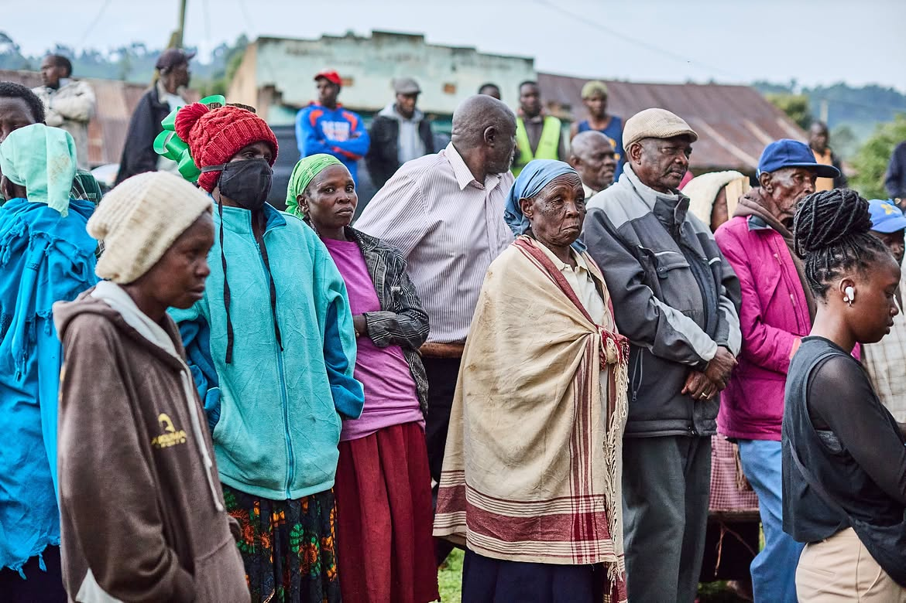

Party Updates & Documents
Official documents
Download and review the latest party updates, official documentation, and templates below.
- Ukweli Party Constitution PDF
- Election of New Party Officials PDF
- Change of Party Symbol PDF
- Change of Party Headquarters PDF
What the 2026 documents confirm
The 2026 Constitution sets the motto Kazi Na Haki and the symbol as two hands holding a bandana on a black and green circular background. Form PP8 records the change of party headquarters. The election notice records the National Delegates Conference leadership election.
From the ground


